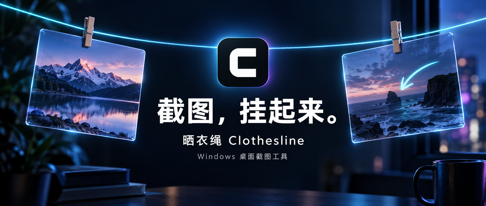
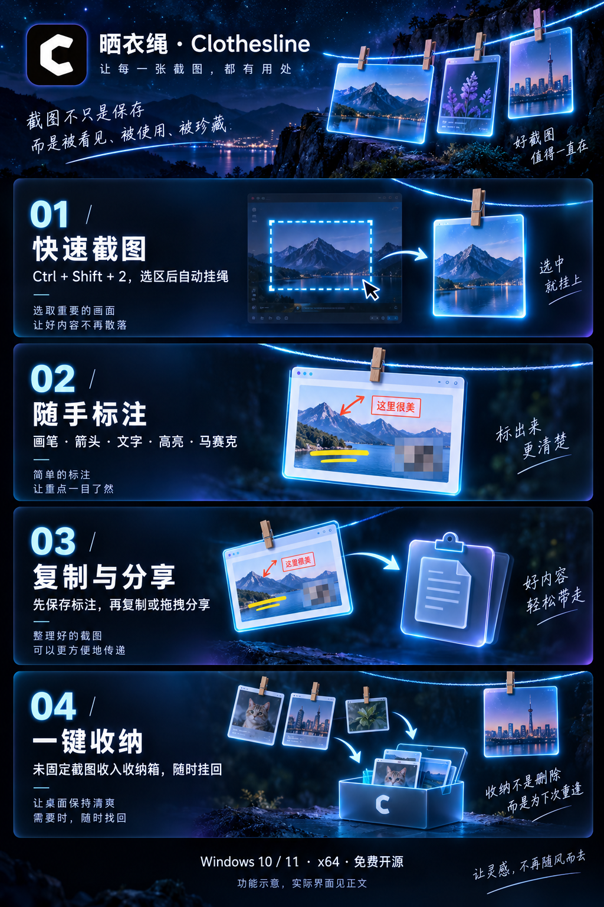
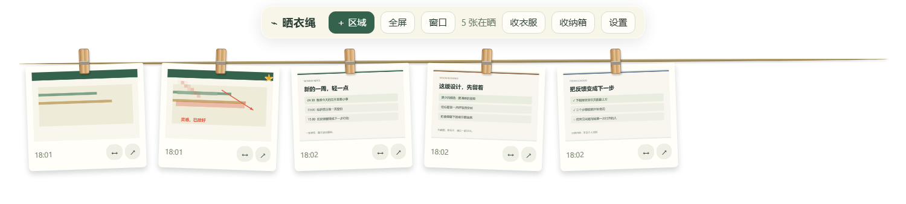
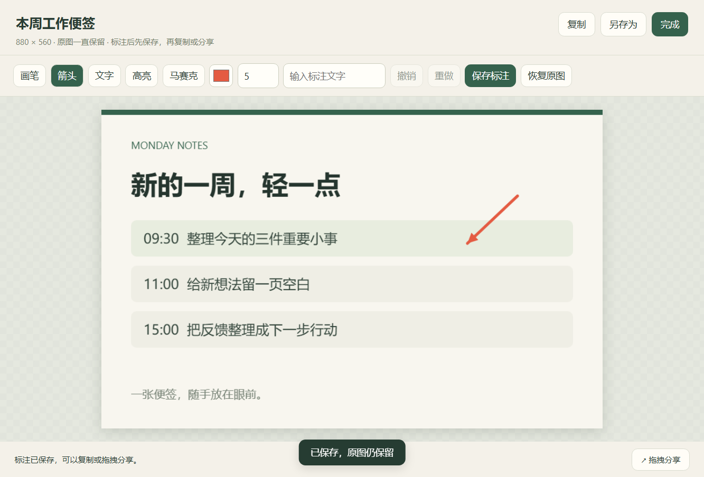

CLOTHESLINE / 0.1.4 公开测试版
我给 Windows 桌面挂了一根「晒衣绳」，专门晾截图
你有没有截过这样一张图？
写东西时想留着参考的一段话，讨论设计时要指出的一个细节，或者刚刚刷到、暂时不想关掉的灵感。
截图只需要一瞬间。可一旦切换窗口，那张图就容易落进聊天记录、剪贴板或某个文件夹里。等真正想用它时，又要重新找一遍。
于是，我做了一个 Windows 桌面工具：晒衣绳 Clothesline。
截图，挂起来。
它会在桌面上放一根虚拟晒衣绳，用小木夹把截图挂在眼前。点一下就能打开，需要时标注、复制和分享，忙完再一起收好。

01 / 按下快捷键，把截图留在眼前
默认按 Ctrl + Shift + 2，拖出想保留的区域，松开鼠标，截图就会自动挂到绳子上。
想截整个屏幕，或只截某个窗口，也可以从工具栏选择。选区中途不想截了，按 Esc 取消。
比如写文章时，把参考内容挂在上方；改页面时，把旧版截图留在旁边。切换窗口后，参考图仍在桌面，需要时点开就能看。

02 / 把“这里有问题”，直接画出来
点击缩略图，会打开预览和标注工具。
画笔、箭头、文字、高亮、马赛克，够用来说明一个具体问题：用箭头指向按钮，写上修改建议，给关键内容加高亮，或者把不想分享的字段打上马赛克。
标注支持撤销和重做，原图也会保留。
记住一个小动作：先点「保存标注」，再复制或分享。这样发出去的才是你刚刚处理好的版本。

03 / 处理好，随手带走
截图可以复制到剪贴板，也可以另存为 PNG 文件。
卡片和预览页上还有一个 ↗ 按钮：按住它，把图片拖到接受文件拖放的应用里。
讨论需求时，图上画一根箭头，常常比再写一段“左上角第二个按钮”更容易说清楚。接收应用如果不支持拖放，就用复制、粘贴。
04 / 忙完，一键「收衣服」
截图多起来之后，绳子也需要整理。
按住 ↔ 可以调整卡片顺序；重要的截图可以固定，留作当前任务的参考。
点一下「收衣服」，未固定的截图会进入收纳箱，固定的继续留在绳子上。需要时再点「挂回」，它就会回来。
收纳会保留文件。要真正删除，可以使用右键菜单，确认后图片及标注版本会进入系统回收站。
它还给你留了一点选择
绳子可以放在屏幕顶部或底部，也可以选择显示器、是否置顶，调整区域截图快捷键，设置自动复制和开机启动。
截图与设置保存在本机，关闭再打开还能继续查看。应用没有截图上传和云同步功能；只有你主动把文件分享给其他应用时，图片才会交给接收方处理。
现在，可以试试了
这次发布的是 0.1.4 公开测试版，支持 Windows 10 / 11 x64，免费开源。
安装版适合日常使用，便携版适合先体验。两种版本都包含运行环境，不需要安装 Node.js、npm 或 .NET。下载并打开后，按 Ctrl + Shift + 2，就能挂上第一张截图。
下载页面： https://github.com/Lucky-BQR/clothesline/releases/tag/v0.1.4
项目与使用说明： https://github.com/Lucky-BQR/clothesline
如果你看的是微信里的文章，也可以在电脑浏览器中复制打开上面的地址。
目前是一根绳子，最多同时挂 80 张截图，暂时没有 OCR、搜索、多绳子或自动更新。受保护内容可能无法截图，最小化窗口建议先恢复；多显示器缩放、跨应用拖拽和长时间运行，也欢迎大家一起反馈。
安装包目前未签名，Windows 可能显示未知发布者。请从项目发布页下载，页面同时提供 SHA-256 校验文件。
如果遇到问题，欢迎在 GitHub Issues 留下 Windows 版本、复现步骤和错误文字。分享问题截图前，记得遮住个人资料。
你最想把哪一张截图挂在桌面上？
免费开源 · Windows 10 / 11 x64 · 截图保存在本机